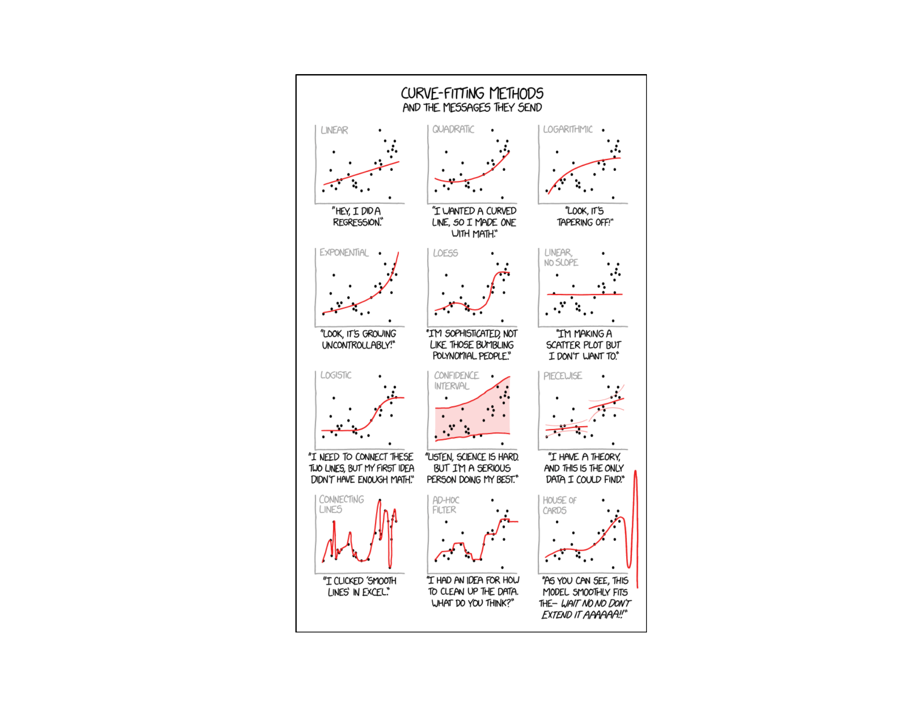
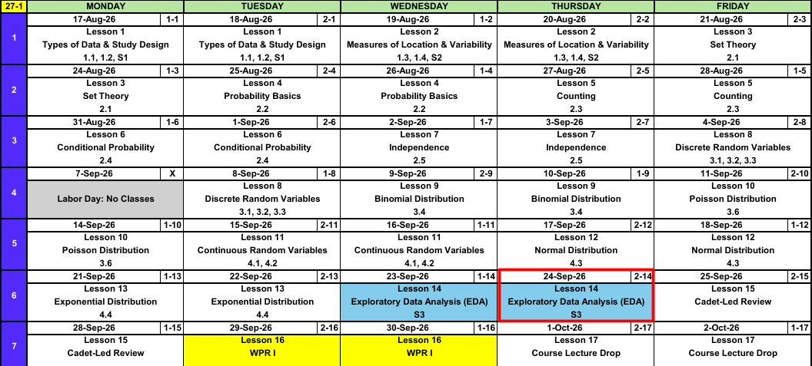
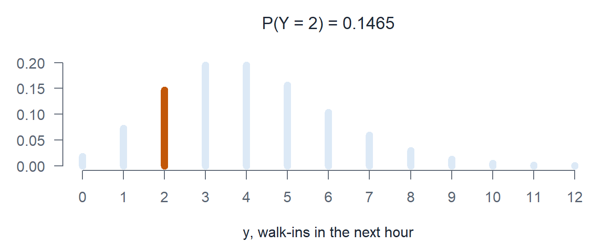
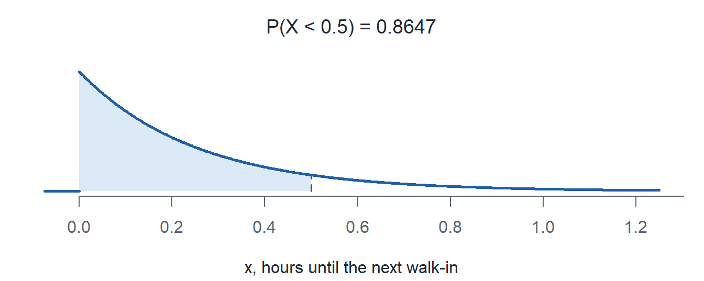
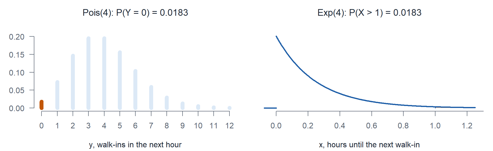

Lesson 14: Exploratory Data Analysis (EDA)
Calendar

Admin
WPR I Is Two Lessons Away
- Lesson 15 (25, 28 Sep) is the cadet-led review. Bring questions, not blank paper.
- Lesson 16 (29-30 Sep) is WPR I, covering Lessons 1 through 13.
- WPR I Review and Solutions
What We Did: Lessons 1 through 13
NoteReview: Data, Study Design, and Summaries (Lessons 1 and 2)
- Population vs sample, parameter (\(\mu\), \(\sigma\), \(p\)) vs statistic (\(\bar{x}\), \(s\), \(\hat{p}\)).
- Random sampling buys generalization, random assignment buys causation.
- Center: mean, median, trimmed mean. Spread: \(s^2\), \(s\), and the fourth spread \(f_s\).
NoteReview: Set Theory and Probability Basics (Lessons 3 and 4)
- Experiment, sample space \(\mathcal{S}\), event as a subset of \(\mathcal{S}\).
- Union is “or”, intersection is “and”, complement is “not”.
- Three axioms, the complement rule \(P(A') = 1 - P(A)\), and the addition rule \(P(A \cup B) = P(A) + P(B) - P(A \cap B)\).
- Equally likely outcomes: \(P(A) = N(A)/N\).
NoteReview: Counting (Lesson 5)
- Product rule: \(n_1 n_2 \cdots n_k\).
- Permutation (order matters): \(P_{k,n} = \dfrac{n!}{(n-k)!}\).
- Combination (order does not): \(\dbinom{n}{k} = \dfrac{n!}{k!\,(n-k)!}\).
NoteReview: Conditional Probability and Independence (Lessons 6 and 7)
- Conditional probability: \(P(A \mid B) = \dfrac{P(A \cap B)}{P(B)}\).
- Multiplication rule, Law of Total Probability, and Bayes’ Theorem.
- Independent: \(P(A \mid B) = P(A)\), tested with \(P(A \cap B) = P(A)\,P(B)\).
- \(P(\text{at least one}) = 1 - P(\text{none})\).
NoteReview: Discrete Random Variables (Lessons 8, 9, and 10)
- pmf: \(p_X(x) = P(X = x)\). cdf: \(F_X(x) = P(X \le x)\), a step function.
- Binomial: BINS, \(p(x) = \dbinom{n}{x} p^x (1-p)^{n-x}\), \(E(X) = np\), \(V(X) = np(1-p)\).
- Poisson: a rate and a window, \(p(x; \mu) = \dfrac{e^{-\mu}\mu^x}{x!}\), \(E(X) = V(X) = \mu\).
- \(E(X) = \sum_x x\,p_X(x)\) and \(V(X) = E(X^2) - [E(X)]^2\).
NoteReview: Continuous Random Variables (Lesson 11)
- Probability is area under the pdf: \(P(a \le X \le b) = \int_a^b f(x)\,dx\).
- \(P(X = c) = 0\), so \(\le\) and \(<\) give the same answer.
- cdf: \(F(x) = P(X \le x)\), and \(P(a \le X \le b) = F(b) - F(a)\).
- Percentile: solve \(F(c) = P(X \le c) = p\) for \(c\).
- \(E(X) = \int x\,f(x)\,dx\) and \(V(X) = E(X^2) - [E(X)]^2\).
NoteReview: Normal Distribution (Lesson 12)
- \(X \sim N(\mu, \sigma^2)\), with \(E(X) = \mu\) and \(V(X) = \sigma^2\).
pnorm(x, mean, sd)is the cdf \(F(x) = P(X \le x)\).qnormruns it backwards.- Standardize with \(z = \dfrac{x - \mu}{\sigma}\) to land on \(Z \sim N(0, 1)\).
- Empirical rule: 68%, 95%, 99.7% within 1, 2, 3 standard deviations.
- \(z_\alpha\) has area \(\alpha\) to its right.
NoteReview: Exponential Distribution (Lesson 13)
- \(X \sim \text{Exp}(\lambda)\) models a wait, with \(E(X) = \sigma = 1/\lambda\).
- \(F(x) = P(X \le x) = 1 - e^{-\lambda x}\), so \(P(X > x) = e^{-\lambda x}\).
pexp(x, rate)takes the rate, not the mean.qexpruns it backwards.- Memoryless: time already waited does not change what comes next.
- Poisson counts events at rate \(\lambda\). The waits between them are \(\text{Exp}(\lambda)\).
Warm-Up: Count or Wait?
Walk-ins arrive at sick call at a rate of 4 per hour.
For each question: count or wait? Fully specify, then compute.
a) What is the probability exactly 2 cadets walk in during the next hour?
TipAnswer
A count.
\[Y \sim \text{Pois}(\mu = 4)\]
- Designate the random variable. \(Y\) is the number of walk-ins in the next hour.
- Name the distribution. Poisson.
- Specify the parameter. \(\mu = 4\) walk-ins.
\[P(Y = 2) = \frac{e^{-4} 4^2}{2!} = \mathbf{0.1465}\]

dpois(2, 4) = 0.1465
b) What is the probability the next cadet walks in within half an hour?
TipAnswer
A wait. Half an hour is \(x = 0.5\).
\[X \sim \text{Exp}(\lambda = 4)\]
- Designate the random variable. \(X\) is the hours until the next walk-in.
- Name the distribution. Exponential.
- Specify the parameter. \(\lambda = 4\) per hour.
\[P(X < 0.5) = 1 - e^{-4(0.5)} = 1 - e^{-2} = \mathbf{0.8647}\]

pexp(0.5, 4) = 0.8647
c) What is the mean time between walk-ins? What is the expected number of walk-ins in the next hour?
TipAnswer
Wait: \(X \sim \text{Exp}(\lambda = 4)\), so \(E(X) = 1/\lambda = \mathbf{1/4}\) hour.
Count: \(Y \sim \text{Pois}(\mu = 4)\), so \(E(Y) = \mathbf{4}\) walk-ins.
d) What is the probability no one walks in during the next hour? Do it both ways.
TipAnswer
“No walk-ins in the next hour” and “the wait is longer than 1 hour” are the same event.
\[\begin{aligned} \text{Count:} \quad & Y \sim \text{Pois}(\mu = 4), && P(Y = 0) = e^{-4} = \mathbf{0.0183} \\ \text{Wait:} \quad & X \sim \text{Exp}(\lambda = 4), && P(X > 1) = e^{-4(1)} = \mathbf{0.0183} \end{aligned}\]

dpois(0, 4) = 0.0183
1 - pexp(1, 4) = 0.0183
What We’re Doing: Lesson 14
Objectives
- Summarize project data with appropriate graphical and numerical descriptive methods (histograms, boxplots, scatterplots). (SLO 2)
- Compute and interpret the sample correlation coefficient \(r\). (SLO 2)
- Distinguish correlation from causation. (SLO 6)
- Communicate exploratory findings and pose questions for further analysis. (SLO 1)
Required Reading
Supplement S3 (Canvas)
Break!
Family
The EDA
ImportantProject Event 1 of 4: EDA, 25 points, due 11 October
Your EDA is a report you publish in Vantage. We walk through it in class today.
- Plot and summarize every variable you plan to use before you model anything
- \(r\) measures the strength and direction of a linear association
- Correlation is not causation
Open Vantage
Go to the MA206 folder in Vantage.
Where We Are in the Project
| Event | Lesson | Date | Points |
|---|---|---|---|
| EDA | 14 | Due 11 Oct | 25 |
| IPR | 34 | 20-23 Nov | 25 |
| Products | 37 | 3-4 Dec | 50 |
| Brief | 38-39 | 7-10 Dec | 100 |
Before You Leave
Today
- Count or wait: same rate, Poisson counts the events, exponential measures the waits
Any questions?
Next Lesson
Lesson 15: Cadet-Led Review
- Review Lessons 1-13
Upcoming Graded Events
- EDA: due 11 October
- WPR I: Lesson 16 (covers Lessons 1-13)
- TEE: 15-18 Dec 2026